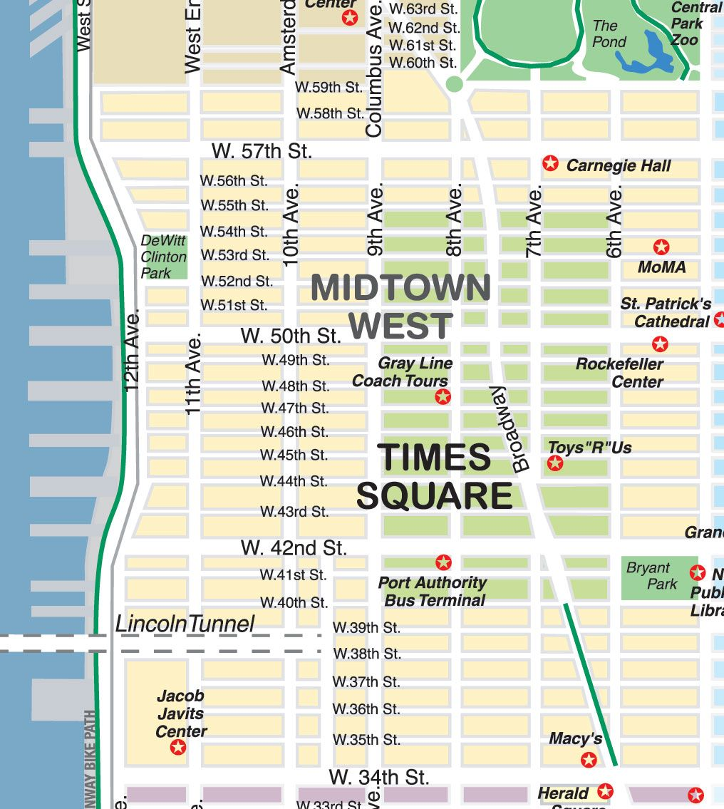
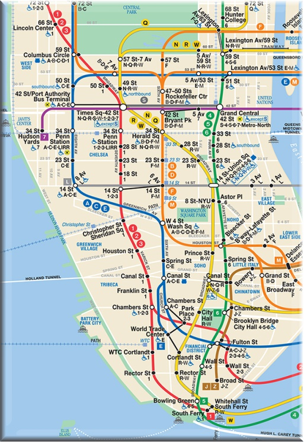

Here are two different maps of times square. The first map on the left shows you where Times Square is and how you can get to it from manhattan by car or walking. The second map of the subway shows how you can get to Times Square by public transport. You can take the 1, 2, 3 line or the 7 line to get there directly or take the F, M or 4, 5, 6 Lines to get there with a short walk.

